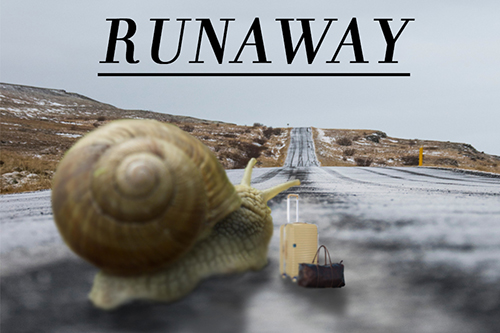

Photoshop/Raster Project
For this raster assignment, I decided I wanted to include a living organism that wasn’t myself, and I choose a snail. I knew I wanted the snail to go towards a destination while carrying his/her baggage. Although I did not find the exact image of a luggage, everything turned out okay in the end. What I like most from this assignment was that the background of the road and snail transitioned smoothly creating a natural and normal image of a snail on a road.